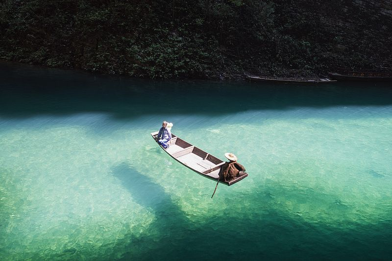
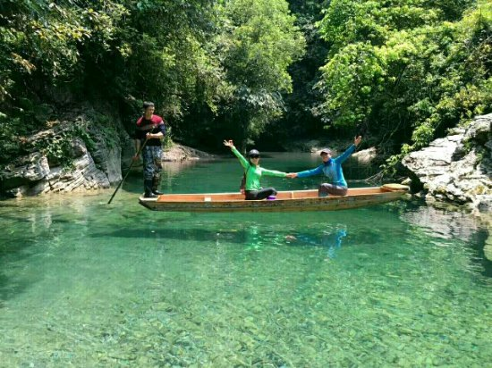
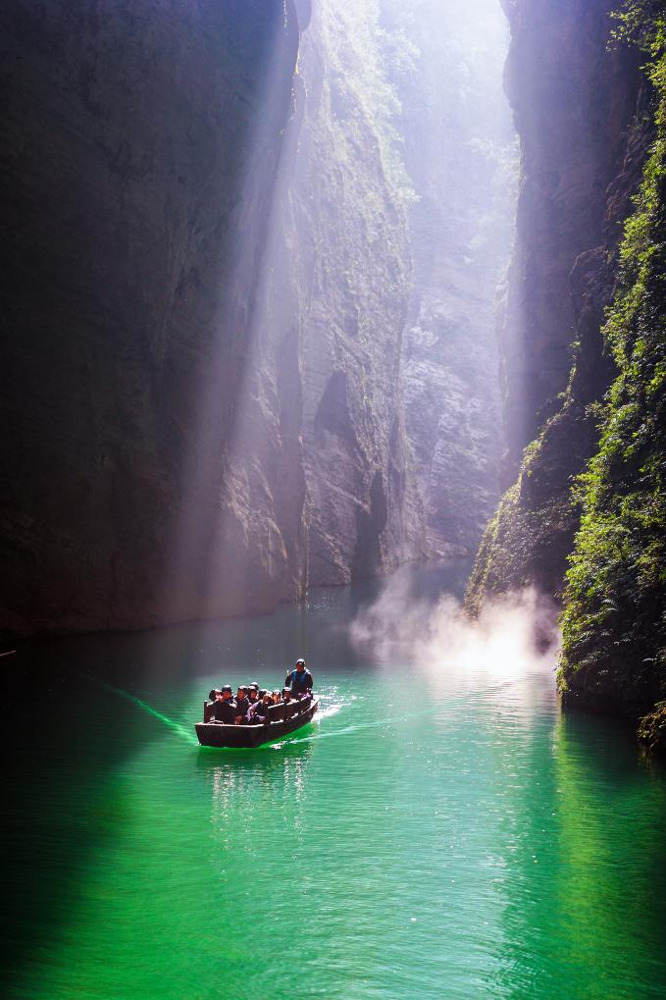

In 1703, the renowned Qing Dynasty playwright and poet Gu Cai (顾彩) embarked on a five-month journey to the Rongmei Tusi territory (modern-day Hefeng, Hubei). Commissioned by his friend Kong Shangren, Gu Cai documented the breathtaking landscapes, unique customs, and the sophisticated Tusi administration in his masterpiece, Rongmei Jiyou (容美纪游). Today, this travelogue serves as the cultural soul of Hefeng, bridging the gap between an ancient hidden kingdom and modern-day explorers.
The English Translation
Echoes of the Past
The English translation of Rongmei Jiyou brings the vibrant life of the 18th-century Wuling Mountains to a global audience. It captures Gu Cai's awe as he entered the "Hidden Peach Blossom Spring."
Translated by scholars like LIU WEI, the work highlights the "total society" of the Tusi era, where Han literati and local Tujia traditions merged to create a unique cultural synthesis.
Hefeng Tourism IP Promotion

Pingshan Canyon
Known as the "Semporna of China," its crystal-clear waters create the illusion of boats floating in mid-air. A core landmark of the Rongmei IP.

Rongmei Tusi Ruins
The historical heart of the region. Explore the remains of the powerful Tusi chiefdom that once ruled these mountains for centuries.

Loushui River
A serene journey through emerald waters and towering cliffs, following the very path Gu Cai took 300 years ago.